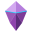

Aprende 3D paso a paso, en la computadora que tienes
Una plataforma web que funciona sin conexión, conectada con Blender y con A‑Frame para llevar el 3D a la web y la realidad virtual.
scene.render.use_simplify → True
scene.render.simplify_subdivision → 1
scene.render.resolution_percentage → 75
scene.eevee.taa_render_samples → 16
Los datos personales se quedan en Amatista. A G7B solo llegan mediciones sin identificar o agregados de 5 equipos o más.
git log hack4edu..main · etiqueta «hack4edu» en los dos repositorios
github.com/Maximiliano-cabello-mata/amatista
github.com/Maximiliano-cabello-mata/amatista-g7b-etl